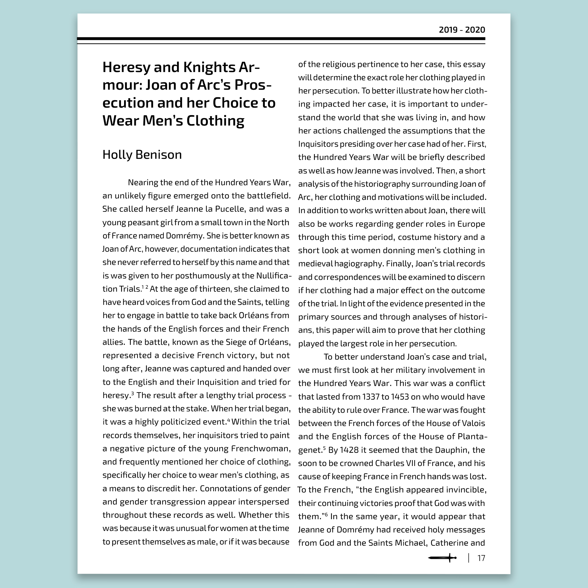
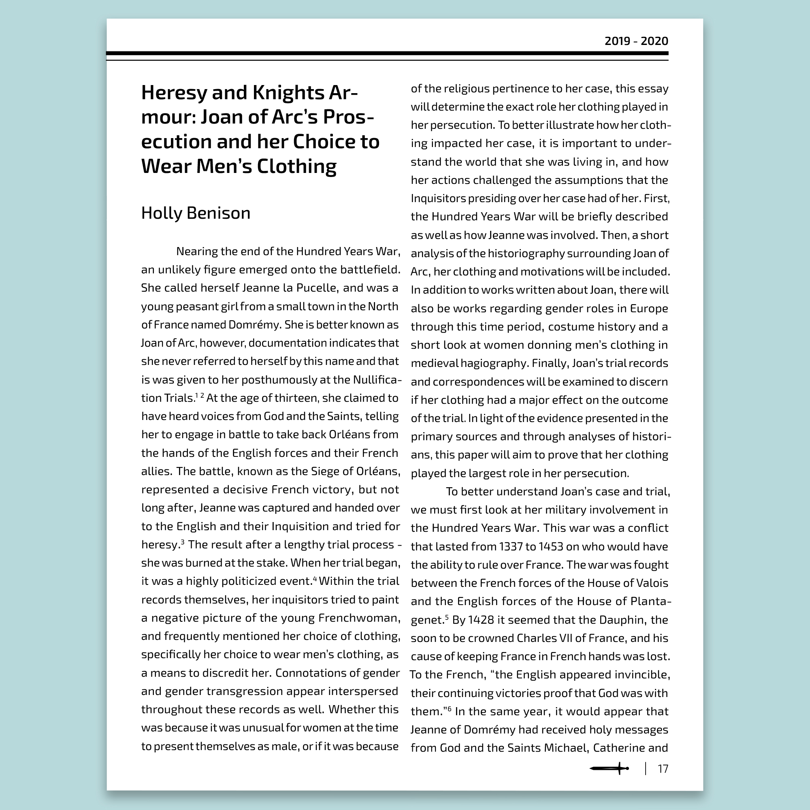

Recently, I was able to work with the Bishop's University History Department for a second time in developing the design and layout for their "Historical Review": A collection of essays submitted by the students over the course of the school year. I first had the opportunity to work with BUHA in January 2021 in the development of their new logo (pictured below). During discussions with BUHA, a clear goal was set to break the mould of academic journals, and to create something that was fun and engaging while still maintaining a sense of professionalism.
I chose to work with a bright and bold colour scheme, paired with flat iconography that represented both the department and the spirit of the university. I used the icons throughout the book to maintain visual consistency, and offer a subtle way of dividing the book into three clear sections.
 
